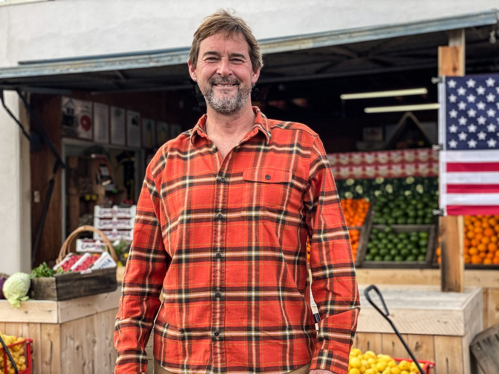

Good food nourishes more than a body. It brings people together.
Fresh fruit, vegetables with the season still in them, and good things made by people who care. At Avocado Shack, we seek out organic produce, build relationships with local growers, and make room for small producers with something delicious to share.
Get to know what’s on our shelves and the people behind it. Then come say hello. There’s always something worth talking about around good food.
Seasonal foodSmall producersCommunity at the table
A ripe avocado. A loaf from Atascadero. Cheese made in Cambria. Explore our selection and follow the flavors back to the farms, kitchens, and makers they come from.
Our selection changes with the seasons and deliveries. Come into the Shack to see what’s fresh today.
WHY WE DO IT
Know the food. Know the people.
Healthy, wholesome food should feel like a pleasure. We follow the seasons, look for organic choices, and care about flavor first: the tomato you eat over the sink, the bread you tear before you get home.
Local relationships are at the heart of the Shack. We want you to know the grower, the town, and the work behind what you eat. You’ll also find good food from independent makers farther afield. Every good thing has a place and a story. Get to know both.
Supporting a small farm or an independent maker keeps more than a product on a shelf. It keeps a relationship going. That’s the kind of market we want to be.
GOOD FOOD IS ONLY HALF THE STORY
North Coast Hiking Club.

Out on the trail with Michael Wolfe
A good morning doesn’t need much. Something fresh to eat, a stretch of coast, and time to get to know the people walking beside you.
At the Shack, we care about what feeds us. That includes getting outside. Michael’s North Coast Hiking Club brings neighbors together for local walks, a little exercise, and a closer look at this place we call home.
Bring a friend, or come on your own. We’ll leave time for the view.
A new trail, a meeting time, and a good reason to get your shoes on. Hiking updates only; Michael’s newsletter has its own signup below.
Saved locally for now. Email delivery is not connected.
COME ON IN
A market with a person behind it.
Michael Wolfe brings a produce buyer’s curiosity and long-standing grower relationships to the Shack. The idea is simple: connect friends and neighbors with good food at fair prices.
Good food, local people, and the things that bring us together. Subscribe to Michael’s community newsletter for notes from the Shack and life here on the Central Coast.
With much gratitude, Michael
Subscribe to hear from Michael. No account needed.
Signups are saved locally during setup. Email delivery will be connected before launch.